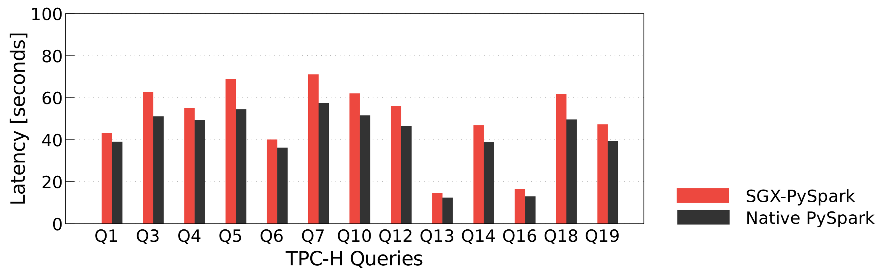

Performance of SCONE-based Programs¶
SCONE-Based SGX PySpark Performance¶
We designed and implemented a SCONE-based SGX-PySpark 1 - a secure distributed data analytics system which is based on PySpark and relies on SCONE and Intel SGX to provide strong security guarantees.
To demonstrate the performance of SGX-PySpark use of a standard data analytics benchmark, i.e.,TPC-H, to demonstrate that SCONE-based SGX-PySpark supports the same range of queries as native PySpark. The figure below presents the latency comparison between SGX-PySpark with native PySpark in processing TPC-H queries. The performance overhead incurred when running Python processes inside enclaves is not significant compared to the native PySpark: the average slowdown is only 22% for TPC-H.

Python Performance¶
For many of the standard Python benchmarks, our SCONE PyPy (i.e., the just in time Python engine) inside of an SGX enclave actually runs faster than CPython in native mode. Yes, we get for many of the benchmarks a speedup over native performance:
For a detail performance analysis have a look at the normalized PyPy performance shows that overheads are for the standard Python benchmarks are acceptable.
Performance Factors¶
The performance of running programs inside of enclaves depends on various factors. The main factors are the following:
-
Locality of memory accesses: if the working set of a process does not fit in the EPC (extended page cache), the process will suffer page faults. During a page fault, a page in the EPC will be selected by the SGX driver, re-encrypted and stored in main memory. The overhead of a process inside of an enclave grows with the page fault rate. If a program has an option to reduce the memory footprint (not include debug symbols in binaries, compiled to reduce size, etc), this will often result in better performance.
-
system calls: each system call requires that memory-based arguments are copied from the enclave to the outside memory and memory-based return values are copied from the main memory into the enclave. Exiting and returning to an enclave takes at least 8000 cycles 2. SCONE uses an asynchronous system call interface that ensures that threads do not need to exit the enclave to perform a system call.
-
threading: SCONE provides application-level threading. This ensures that in case an application thread waits for some event like the return of a system call, we can switch to a new application thread without the need to exit the enclave.
For getting optimal performance in your applications, SCONE provides multiple tuning parameters (see here): The default SCONE configuration file often provides reasonable performance but optimal performance - at least for SGXv1 hardware - can often only be achieved by selecting the right number of ethreads, sthreads and heap size.
© scontain.com, July 2018. Questions or Suggestions?
-
Do Le Quoc, Franz Gregor, Jatinder Singh, and Christof Fetzer. 2019. SGX-PySpark: Secure Distributed Data Analytics. In The World Wide Web Conference (WWW '19), Ling Liu and Ryen White (Eds.). ACM, New York, NY, USA, 3564-3563. DOI: https://doi.org/10.1145/3308558.3314129 ↩
-
Recent CPU microcode updates have increased this number further. ↩